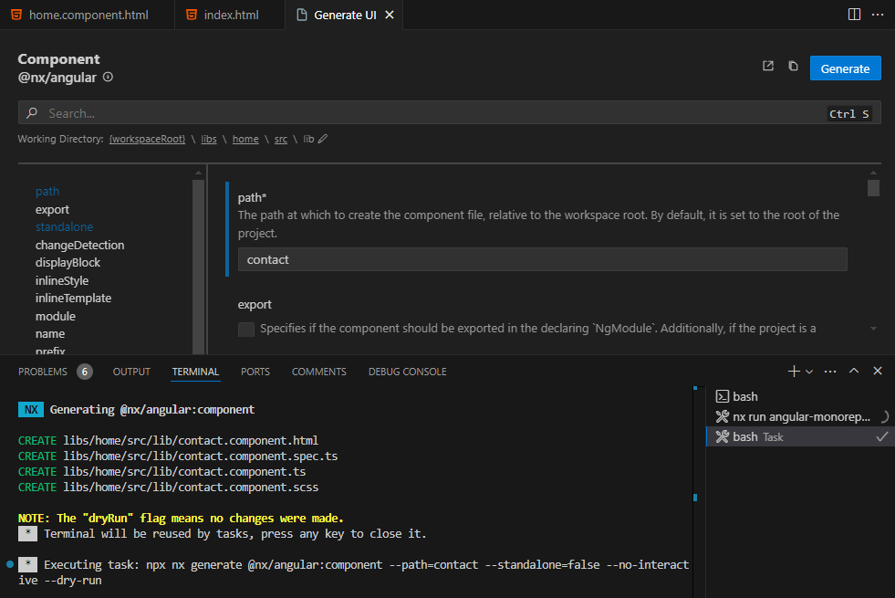

NX Monorepo com Angular
Flavio Milani Desenvolvedor Web
Meu Perfil
- Resido na capital de São Paulo
- Casado e 1 filha de 7 anos
- Mentorando de Angular Pro 3.0
- Pós-Graduação em FullStack Java / Angular – Vincit EAD
- Analista de Engenharia de TI no Itaú-Unibanco
- Palestrante voluntário nos eventos de TDC Florianópolis e São Paulo
- 10 anos de experiência em desenvolvimento web nas empresas: Sonda IT, HP, IBM, CI&T
O que é Nx?
Nx é um poderoso sistema de construção de código aberto que fornece ferramentas e técnicas para melhorar a produtividade do desenvolvedor, otimizar o desempenho do CI e manter a qualidade do código.
O que é Monorepo?
Monorepo é um único repositório que contém vários projetos distintos, com relacionamentos bem definidos.
Tipos de arquitetura

Como o Nx funciona?
O Nx é construído de forma modular para permitir que você use apenas os recursos necessários.

https://nx.dev/getting-started/why-nx#how-does-nx-work
Plugins - Tecnologias incluídas no projeto


Como criar novo projeto com Nx com comando seguinte:
~❯ npx create-nx-workspace@latest angular-monorepo --preset=angular-monorepo
NX Let's create a new workspace [https://nx.dev/getting-started/intro]
✔ Application name · angular-store
✔ Which bundler would you like to use? · esbuild
✔ Default stylesheet format · scss
✔ Do you want to enable Server-Side Rendering (SSR) and Static Site Generation (SSG/Prerendering)? · No
✔ Test runner to use for end to end (E2E) tests · cypress
✔ Which CI provider would you like to use? · github
Estrutura do projeto
Extensão Nx Console no VS Code
Demonstração de Extensão Nx Console no VS Code

Nx Graph
Para rodar comando npx nx graph para visualizar desenho de dependências (libs)
Nx show project
Para rodar comando npx nx show project home para executar tarefas (run tasks)
Gerar libs
Gerar componentes
Configuração do Typescript compartilhada
O arquivo tsconfig.base.json é um arquivo de configuração do TypeScript que é compartilhado por todos os projetos em um monorepo Nx.
Configuração do Nx
O arquivo nx.json é um arquivo de configuração do Nx que define a estrutura e as configurações do monorepo. Ele é usado para configurar as bibliotecas, aplicativos e outros projetos dentro do monorepo.
Configuração do Tailwind com plugin de DaisyUi
O arquivo tailwind.config.js é um arquivo de configuração que permite usar os componentes do DaisyUI e aproveitar as vantagens do Tailwind para gerar estilos CSS personalizados.
https://nx.dev/recipes/angular/using-tailwind-css-with-angular-projects
https://daisyui.com/docs/install/
Nx Cloud - Integração Contínua e Rápida
O Nx Cloud segue um modelo de CI baseado em tarefas que não é apenas rápido, mas também robusto . Em vez de atribuir estaticamente o trabalho às máquinas, você pode imaginar uma pilha de tarefas que são selecionadas automaticamente pelos agentes na infraestrutura do Nx Cloud.
Obrigado!
- flaviomilani83@gmail.com
- https://www.linkedin.com/in/flavio-milani/